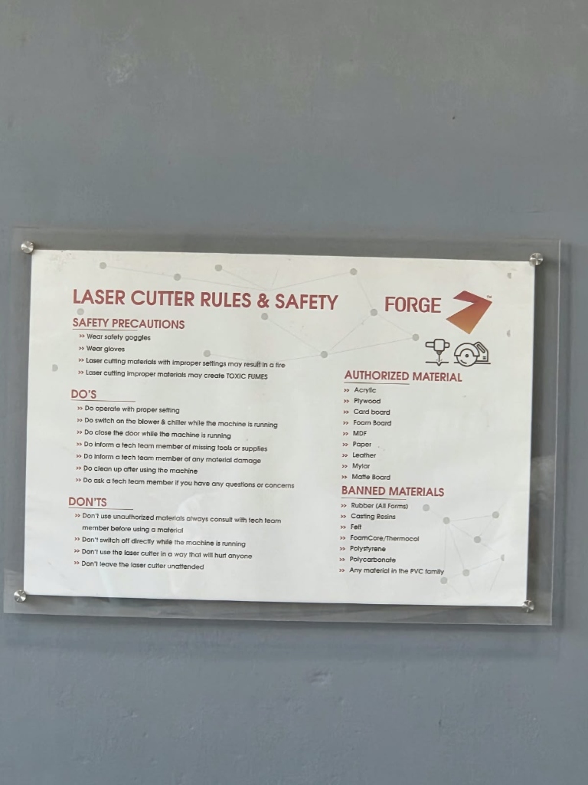
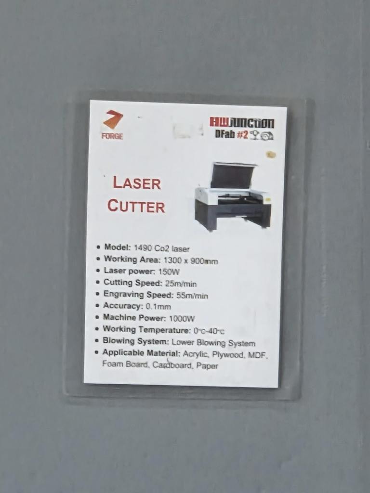
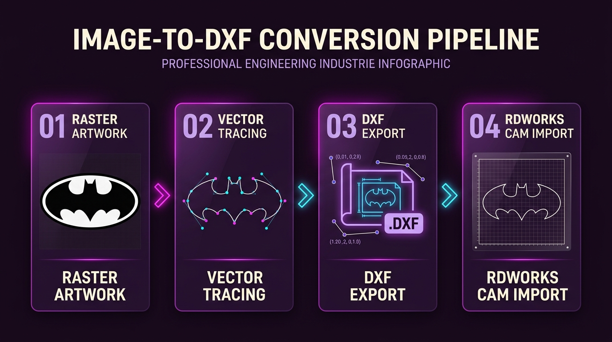
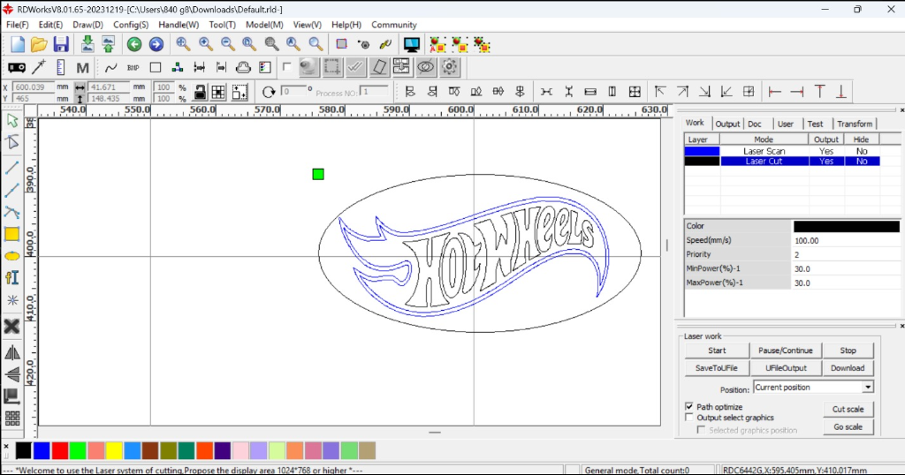
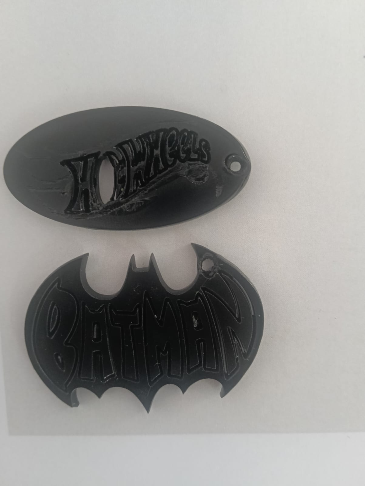

1. Lab Safety & Safety Rules
Safety precautions, personal protective equipment, and facility safety subsystems followed during laser cutting in the FORGE Digital Fabrication Laboratory.
The 6 Required Laboratory Safety Pillars
- 1. Laser Safety (Class 4 Beam Shielding): The 150W CO₂ laser produces invisible infrared light at 10.6 µm. Operation is strictly restricted to an enclosed Class 1 safety interlocked chamber with tinted acrylic shielding. Dedicated OD6+ safety goggles are worn at all times.
- 2. Exhaust System (Centrifugal Fume Extraction): High-volume industrial exhaust blowers maintain continuous negative chamber pressure, evacuating vaporized PMMA particulate, organic fumes, and smoke directly through ducted external exhaust vents.
- 3. Water Chiller (Optical Thermal Stabilization): An industrial continuous water chiller maintains the CO₂ glass resonator tube temperature strictly between 18°C and 22°C with distilled water, preventing tube cracking, mode hopping, and power degradation.
- 4. Earthing (High-Voltage Static & Flyback Grounding): Dedicated heavy-gauge protective earth ground connections prevent high-voltage (25kV+) flyback power supply discharge, eliminating electrical shock risks and electrical noise interference with DSP controllers.
- 5. Coaxial Air Assist (Kerf Slag Ejection): High-pressure compressed air is directed coaxially through the nozzle orifice onto the cutting point, preventing combustion flare-ups, clearing molten kerf slag, and shielding the focusing lens from smoke deposits.
- 6. General Machine Safety (No Unattended Cutting): The machine is never operated unattended. An operator remains in visual contact with immediate access to the Emergency Stop switch, and a dedicated CO₂ fire extinguisher is stationed at the workstation.

2. Machine Details
Verified technical specifications of the industrial CO₂ laser cutting platform located at the FORGE HW Junction DFab #2 Laboratory.
| Required Field | Verified Machine Specification | Engineering Context / Operating Parameters |
|---|---|---|
| Make | HW Junction / FORGE Laboratory | Industrial CNC Laser Platform (DFab Lab #2) |
| Model | 1490 CO₂ Laser System | Heavy-duty dual-gantry linear motion chassis with knife-blade & honeycomb bed |
| Bed Size | 1300 mm × 900 mm | Large format working envelope accommodating full-sheet acrylic and plywood stock |
| Laser Tube Wattage | 150W (Watts) | 150 Watt water-cooled sealed CO₂ glass laser resonator tube (10.6 µm IR wavelength) |
| Control Software | RDWorks V8 (V8.01.65) | DSP Controller Ecosystem with Ruida RDC6442G mainboard integration |

3. Materials Used
Documented stock materials, measured thickness values, and material origins used during laboratory laser cutting.
| Material Type | Measured Thickness | Stock Source | Fabrication Suitability & Optical Properties |
|---|---|---|---|
| Cast Acrylic (PMMA) | 3.0 mm (Verified with calipers) | FORGE DFab Innovation Lab Material Store | High optical absorption at 10.6 µm; vaporizes cleanly leaving flame-polished, transparent, vertical edge contours. |
| Engineered Plywood / MDF | 3.0 mm (Verified with calipers) | FORGE DFab Innovation Lab Material Store | Homogeneous density, minimal internal voids; produces high-contrast dark carbonized engraving and sharp vector cuts. |
4. Selected Design / Image
Visual vector emblems chosen for multi-operation laser cutting and raster scan surface engraving.
Design Selection Rationale
Selection Justification: The Batman emblem and Hot Wheels insignia designs were selected specifically to evaluate dual-mode laser processing:
- Geometric Boundary Evaluation: Complex external silhouettes with sharp inside corner radii (<0.2 mm) to test vector continuous cutting accuracy.
- Dual-Layer Interaction: Interior lettering and solid fills require dense raster scanning (engraving), while the outer border requires full through-cut separation.
- Keyring / Functional Integration: Inclusion of precision mounting holes to verify kerf fit and structural strength in 3.0 mm stock.

5. Image-to-DXF Conversion
Chronological conversion pipeline transforming raster digital graphics into machine-readable CAD vector exchange formats.
Rapid Prototyping Pipeline • Convertio Online Tool
Due to laboratory session time constraints and the need for rapid digital fabrication turnaround, Convertio (an online file conversion tool) was utilized to efficiently convert high-contrast 2D raster images (PNG/JPEG) directly into clean .DXF (Drawing Exchange Format) vector files. This streamlined workflow eliminated lengthy manual tracing while producing accurate polyline boundaries ready for CAM nesting in RDWorks V8.
Step 1: Raster Artwork Selection & Contrast Prep
High-resolution, high-contrast monochrome raster images (PNG/JPEG) of the Batman and Hot Wheels emblems were prepared, ensuring clean boundary separation between solid graphic fills and negative space.
Step 2: Online Vectorization via Convertio
Under lab time constraints, the raster files were processed through Convertio (convertio.co), an online vector conversion tool that automatically computes vector contours and outputs standardized .dxf CAD vector files.
Step 3: DXF Geometry & Scale Validation
The exported .dxf files were inspected to ensure all contours, closed polylines, and millimeter unit scales were preserved accurately without missing internal text loops or corrupted vertices.
Step 4: RDWorks V8 Import & Layer Assignment
The DXF files were imported directly into RDWorks V8, where vector geometry was verified on the 1400×900 mm bed and assigned distinct layer colors for surface engraving (Scan) and perimeter through-cutting (Cut).

6. File Preparation
Vector cleaning, geometry verification, scaling, and closed path confirmation prior to sending toolpaths to the machine.
Vector Cleaning & Duplicate Removal
Eliminated overlapping duplicate vectors using RDWorks' "Delete Overlap" tool. Duplicate lines cause double-firing along the same path, resulting in severe edge melting and charring.
Scaling & Dimensional Locking
Verified physical bounding dimensions in RDWorks (e.g. 80 mm width for keychains), locking aspect ratios to preserve geometric symmetry and tight tolerances (±0.1 mm).
Closed Path Confirmation
Executed curve closure checks to ensure all outer cut paths represent closed polylines. Open gaps prevent complete perimeter severance during through-cutting.
7. Nesting & Layout in RDWorks
Layer color assignments, operational mode differentiation (Laser Scan vs. Laser Cut), and part arrangement on the 1300 × 900 mm workspace.
Layer Segregation & Execution Priority
- Blue Layer —
Laser Scan(Engraving): Assigned to internal graphics and emblem lettering. Configured with Priority 1 so surface raster engraving completes before any cutting occurs. - Black Layer —
Laser Cut(Through-Cut): Assigned to outer bounding contours and mounting holes. Configured with Priority 2 so parts are severed only after internal detail execution. - Material Placement & Origin: Positioned within stock margins with 5 mm inter-part spacing to maximize sheet utilization and avoid edge blowout.

Laser Scan (Priority 1) and Black perimeter assigned to Laser Cut (Priority 2, 100 mm/s speed, 30.0% power).8. Final Machine Settings
Verified parameter matrix used during laser fabrication on the 150W CO₂ laser platform.
| Material | Thickness | Operation | Speed | Minimum Power | Maximum Power | Number of Passes | Frequency / Mode |
|---|---|---|---|---|---|---|---|
| Cast Acrylic (PMMA) | 3.0 mm | Laser Scan (Engraving) | 300.00 mm/s | 18.0 % | 22.0 % | 1 Pass | Continuous Wave (CW) |
| Cast Acrylic (PMMA) | 3.0 mm | Laser Cut (Perimeter) | 100.00 mm/s | 30.0 % | 30.0 % | 1 Pass | Continuous Wave (CW) |
| Engineered Plywood / MDF | 3.0 mm | Laser Scan (Engraving) | 300.00 mm/s | 20.0 % | 25.0 % | 1 Pass | Continuous Wave (CW) |
| Engineered Plywood / MDF | 3.0 mm | Laser Cut (Perimeter) | 100.00 mm/s | 30.0 % | 30.0 % | 1 Pass | Continuous Wave (CW) |
9. Cutting Process
Chronological execution: software programming, machine focusing, assist-gas verification, and live toolpath execution.

Sequential Machine Execution Protocol
- 1. Workpiece Loading: Acrylic/plywood sheet placed flat on the honeycomb bed, checked with manual clamps for planar level.
- 2. Focal Height Setting: Adjusted Z-axis bed height using the manual acrylic stepped focus gauge (focal distance strictly set to lens focal plane).
- 3. Subsystems Activation: Verified water chiller operational (18°C–22°C) and turned on high-flow exhaust blower and coaxial air assist.
- 4. Boundary Framing: Executed bounding box "Frame" test on Ruida DSP panel to ensure toolpaths lie completely inside sheet margins.
- 5. Execution & Fume Evacuation: Laser job fired with closed lid; allowed 30-second dwell after completion for complete smoke extraction.
10. Final Result – Hero Shot
Photographic showcase of completed laser-cut and raster-engraved components.

11. Problems Faced & Solutions
Documented troubleshooting log of real-world challenges encountered during laser fabrication and the corrective engineering solutions applied.
| Problem Encountered | Possible / Identified Cause | Solution Implemented | Final Outcome |
|---|---|---|---|
| Fragile Geometry Breakage (Hot Wheels Wheel & Micro-Details) | Selecting graphic silhouettes with ultra-fine lettering and thin structural bridges (<1.0 mm) in the Hot Wheels design caused the delicate wheel section to snap and break under concentrated laser kerf heat and mechanical handling. | Analyzed the entire vector geometry in CAD before cutting; thickened delicate bridges, enlarged micro-lettering, and modified vector contours to ensure all structural sections exceed 1.5 mm minimum wall thickness. | Durable fabricated output with intact wheel geometry and high structural stability. |
| Laser Scan vs. Cut Layer Confusion & Engraving Depth Control | On the initial attempt, layer parameters were misconfigured between raster scanning (surface engraving) and vector cutting, making it difficult to control the precise engraving depth in millimeters and risking complete burn-through. | Configured distinct dual-layer color rules in RDWorks V8: Blue layer set to high speed (300 mm/s) and low power (20–25%) to achieve the exact intended surface engraving depth (0.3–0.5 mm), while Black layer was set to higher power (30–65%) and controlled speed (30–100 mm/s) for through-cutting. | Crisp, well-defined surface engraving with controlled depth without burning through the material. |
| Sub-Optimal Execution Priority Sequence | Executing the outer perimeter cut before internal scan engraving caused small detached pieces to drop and shift out of the optical focal plane. | Assigned Blue Scan layer to Priority 1 (execute surface engraving first on anchored stock) and Black Cut layer to Priority 2 (through-cut last). | Flawless engraving alignment with zero workpiece displacement or defocusing. |
12. Reflection
First-person technical synthesis covering skills gained, operational insights, and future manufacturing considerations.
What I Learned & Hands-On Insights: Working with the 1490 CO₂ Laser provided immense practical engineering knowledge in subtractive fabrication. I learned how to carefully analyze graphic designs before fabrication—realizing that designs with ultra-small letters or delicate thin features (like the Hot Wheels wheel geometry) must be modified and thickened to prevent physical breakage. I also mastered how to adjust power, speed, and focal settings in RDWorks V8 to precisely control the engraving depth in millimeters, seamlessly transitioning between delicate surface scanning and clean perimeter through-cutting.
Safety & What I Would Do Differently: Safety is the single most critical factor when operating high-power laser equipment. Even when simply observing or monitoring the machine during cutting, looking into the enclosure without certified laser safety glasses is hazardous and strictly not advisable due to invisible Class 4 infrared reflections. In future projects, I will always perform pre-cut CAD geometry audits to verify minimum feature thickness and ensure all protective gear is worn throughout the entire operation.
13. Source Files
Verified downloadable source files: Native RDWorks RLD manufacturing project packages with pre-configured laser parameter toolpaths.
Batman RDWorks RLD
BATMAN FINAL.rld • 671 KBComplete native RDWorks V8 manufacturing project file containing pre-configured Blue Scan and Black Cut power/speed presets.
Hotwheels RDWorks RLD
Hotwheels.rld • 836 KBComplete native RDWorks V8 manufacturing package containing optimized scan intervals and perimeter cutting parameters.